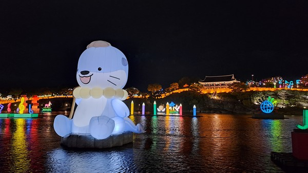
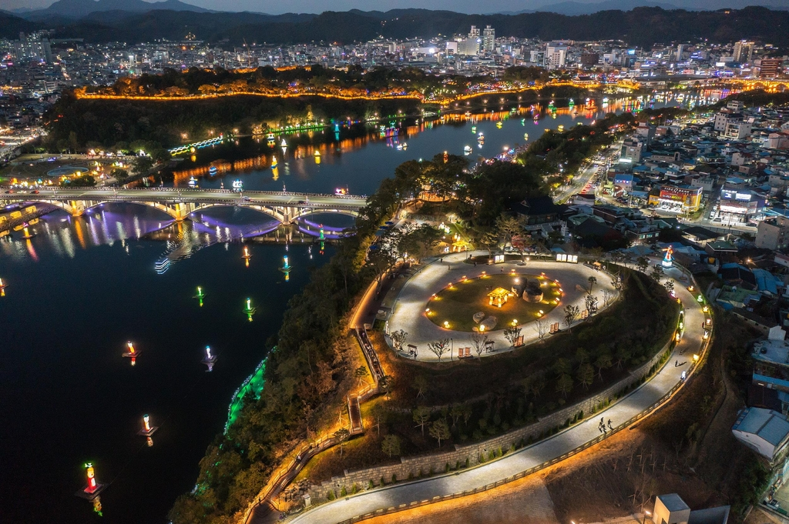

경상남도 진주시 · 여행 안내
강 위에 등불이
뜨는 밤, 진주
금빛 조명이 켜진 진주성과 촉석루, 남강 위를 떠다니는 유등, 물 위에 앉은 수달 하모까지. 사진 네 장과 진주시 관광 누리집 정보로 진주의 밤을 따라갑니다.
일정·요금·시간은 진주시 관광 누리집(2026년 11월 16일 확인) 기준입니다. 자료와 누리집 어디에도 없는 정보는 확인 필요로 표시했습니다.


위치
서부 경남의 중심,
남강이 흐르는 도시
진주시는 7개 시·군과 맞닿은 서부 경남의 중심 도시입니다. 남강이 동서로 흐르고, 서쪽에는 경호강과 남강으로 이어지는 진양호가 있습니다. 경전선 철도와 남해고속도로가 동서로, 통영대전고속도로가 남북으로 지나갑니다.
출처: 진주시청 누리집 › 자연환경
가는 길
창원에서 1시간,
서울에서 4시간 안팎
아래 교통수단을 누르면 그래프가 그 수단의 수치로 바뀝니다. 막대에 마우스를 올리면 자세한 시간과 요금이 보입니다.
숫자로 보는 진주
14개 동에 시민 10명 중 8명,
1읍 · 15면 · 14동
동은 남강을 끼고 도심에 모여 있고, 면은 그 바깥을 넓게 둘러쌉니다. 지도의 구역에 마우스를 올리면 그곳의 인구가 보입니다.
- 면적
- 712.94㎢ 경남의 6.8%
- 인구
- 340,835명 2026.10.31 기준
- 크기
- 43.7 × 33.2㎞ 동서 × 남북
- 기후
- 13.5℃ 연평균 · 강수 1,493㎜
읍 · 면 · 동
출처: 진주시청 누리집 › 자연환경 · 2026년 10월 주민등록 인구 현황 · 경계는 진주시 행정구역 지도(© doopedia)를 따라 그렸고, 도심 동 경계는 근사치입니다
진주 관광캐릭터
“그럼, 좋아!”
진주 수달 하모
진양호와 남강에 사는 천연기념물 수달을 모티브로 한 진주시 관광캐릭터입니다. 이름 ‘하모’는 동의와 긍정을 뜻하는 진주 방언으로, 고민 있는 사람들에게 희망을 전하고 용기를 북돋아 주는 캐릭터입니다.
- 01머리 위의 조개는 도시 이름 ‘진주’를 상징합니다.
- 02남강은 진주 시내를 동서로 가로질러 흐르는 강으로, 하모의 모티브인 수달이 사는 곳입니다.
- 03목에 건 진주 목걸이도 조개와 함께 ‘진주’를 나타냅니다.
- 04꼬리의 파도 무늬는 진주를 대표하는 ‘물’과 깨끗한 이미지를 담았습니다.
- 탄생
- 2021년 2월 · 전국 캐릭터 공모전 최우수작
- SNS
- 인스타그램 @hamo_in_jinju · 유튜브
출처: 진주시청 누리집 › 관광캐릭터 (모티브·디자인·이름 뜻, 문의 관광진흥과 055-749-5321) · 경남도민일보 2021.7.28 (공모전) · 양산신문 2025.7.21 (SNS·굿즈)
장면 01 · 진주성 · 사적 제118호
밤 늦게까지 문을 여는
남강 벼랑 위의 성
둘레 1,760m의 석성으로, 고려 우왕 5년(1379)에 토성을 석성으로 고쳐 쌓았습니다. 성 안의 촉석루는 1241년에 처음 지은 누각으로 진주 8경 중 제1경입니다. 임진왜란 3대첩 가운데 하나인 진주대첩이 벌어진 곳이기도 합니다.
- 개방 · 3~10월
- 05:00 – 23:00
- 개방 · 11~2월
- 05:00 – 22:00
- 유료 관람 시간
- 09:00 – 18:00
- 해설 (사전 예약)
- 055-749-7449
| 관람료 | 개인 | 단체 30명+ |
|---|---|---|
| 어른 (20~64세) | 2,000원 | 1,400원 |
| 청소년 (13~19세) · 군인 | 1,000원 | 600원 |
| 어린이 (7~12세) | 600원 | 400원 |
출처: 진주시 관광 누리집 › 진주성 안내 · 문의 055-749-5171
장면 02 · 진주남강유등축제
남강 위에 등을 띄우는
열엿새의 가을밤
5년 연속 대한민국 글로벌 육성 축제로 선정된 진주의 대표 축제입니다. 진주성이 있는 본성동 남강 일대에서 열립니다.
- 유등 점등 시간
- 18:00 – 24:00
- 부교 · 부스 운영
- 13:00 – 23:00
- 장소
- 진주성, 진주남강 일원
- 이용료
- 무료
- 주최 · 주관
- 진주시·진주문화예술재단 · 진주남강유등축제 제전위원회
- 주차
- 진주종합경기장·진주역·혁신도시 등 임시주차장과 셔틀버스 운영(2026년 기준)
출처: 진주남강유등축제 공식 누리집 yudeung.com (일정·시간·주최) · 진주시 관광 누리집 (이용료·프로그램) · 문의 055-761-9111